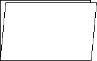
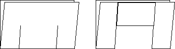
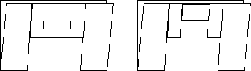
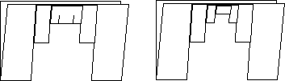
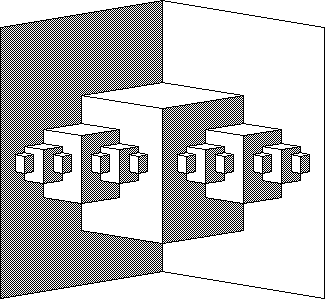

| Paperfolding provides a wonderful physical example of how
iterative processes generate fractal shapes.
Uribe's book has clear instructions
on making some fascinating examples.
Simmt and
Davis give clear descriptions of several such constructions, along with examples
of the mathematical questions students are led to ask while making these "fractal
cards." Moreover, once the basic examples are grasped, students can easily
construct their own examples. Any project that gives students creative
control is pedagogically valuable, and this is yet another instance of these
projects in fractal geometry. |
| Valentine's Day and Christmas have been especially effective
times to introduce this exercise.
|
| Here we give one example. What other fractal cards can you produce?
|
| Begin with a piece of paper. Fold it once. The unfolding stage involves reversing
the directions of some folds, so repeat each fold several times, reversing the direction
with each repetition. |
 |
|
| Now make two cuts, each about 1/4 of the side length from each edge and about
half way to the other edge. Fold up the middle flap formed by these cuts. |
 |
|
| For the fold just formed, repeat the previous step.
Now make two cuts, each about 1/4 of the side length from each edge and about
half way to the other edge. Fold up the middle flap formed by these cuts. |
 |
|
| Do it again. (Note the process being iterated.) Three iterations are about the
limit with regular paper. Could more steps be done using origami paper? |
 |
|
| Now unfold, forming right-angle boxes. The largest box opens into the
right angle of the first fold, and each smaller box also opens into the first fold. |
|  |
| Thanks to Steve Smith and to Colleen Clancy for demonstrating this example. |